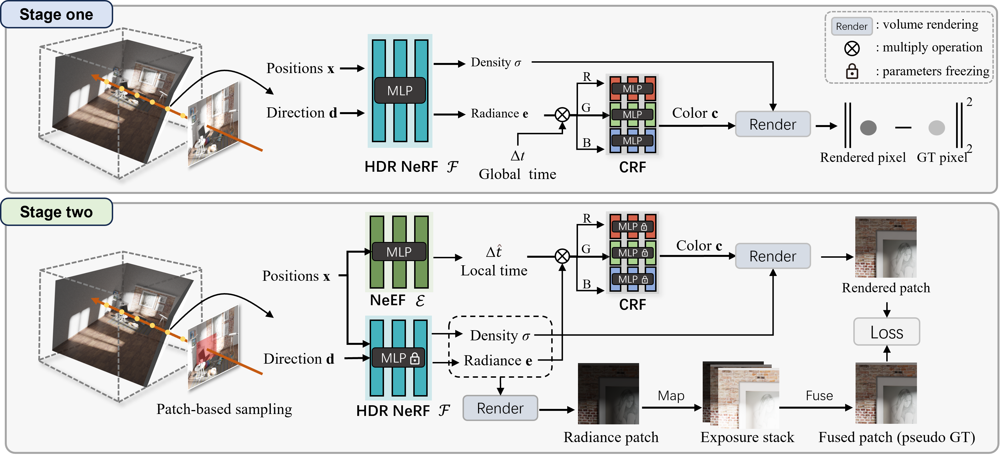

Our LTM-NeRF, which incorporates the Camera Response Function (CRF) module and the Neural Exposure Field,
collaborates seamlessly with NeRF. Using only (a) LDR views with different exposure settings as the supervision,
LTM-NeRF can reconstruct an HDR neural radiance field for HDR view rendering.
Furthermore, LTM-NeRF also supports directly producing (b) locally tone-mapped views,
or (c) the LDR views (globally tone-mapped using CRF) under a variety of exposure settings.
Abstract
Recent advances in Neural Radiance Fields (NeRF) have provided a new geometric primitive for novel view synthesis.
Constrained by camera sensors and input views, novel views rendered by current methods exhibit a lower dynamic range
compared to the range perceivable by human eyes. To address this, we present High Dynamic Range (HDR) NeRF with a
spatially varying neural exposure field (aka LTM-NeRF), a method designed to recover an HDR radiance field and achieve
3D local tone mapping. Our LTM-NeRF contains a Camera Response Function (CRF) module and a neural exposure field,
working in cooperation with a NeRF-based framework. Our approach allows for the synthesis of HDR views, tone-mapped views,
and LDR views under different exposure settings, using only the multi-exposure LDR inputs as the supervision.
Specifically, we propose a differentiable CRF module for HDR radiance field reconstruction,
globally mapping the scene's HDR radiance to an LDR pixel value captured by the camera sensor.
Moreover, we introduce a spatially varying exposure field to approximate the HDR scene appearance in a NeRF with limited dynamic range locally,
for compatibility with various displays. To evaluate our method, we collect a new forward-facing HDR dataset.
Experimental results on synthetic and real-world scenes validate that our method can not only synthesize HDR views
and exposure-varying LDR views accurately but also render locally tone-mapped views naturally.
Methodology
Overview of LTM-NeRF. The optimization of LTM-NeRF is composed of two stages.
In stage one, an HDR NeRF is recovered by integrating a NeRF-based framework with the CRF Network.
The first stage is optimized under the supervision of multi-view multi-exposure images.
After the optimization, the learned HDR NeRF and CRF are frozen.
In stage two, a Neural Exposure Field (NeEF) is introduced to represent the exposure time of the HDR NeRF and achieve 3D tone mapping.
To optimize NeEF, we conduct pseudo-ground truth as the supervision.
After the whole training, the system can render locally tone-mapped views, HDR views, and LDR views with different exposures.

Results -- LDR Views (varying exposure)
After reconstructing the HDR NeRF from multi-exposure multi-view images, LTM-NeRF can efficiently render controllable LDR views with varying exposures due to the incorporating of the Camera Response Function during the rendering process.
Results -- HDR Views
LTM-NeRF can render HDR novel views from the HDR NeRF. The HDR views are tone mapped with a 2D Tone Mapping Operation (TMO) for display. In comparison to LDR views, the HDR views contain the scene content of both over-exposure and under-exposure areas.
Results -- Locally Tone-mapped Views (3D tone mapping)
LTM-NeRF can also directly render local tone-mapped views. Thanks to the introduction of the spatially varying neural exposure field,
LTM-NeRF preserves the consistency of rendered views. The Exposure Maps display the learned exposure time of each 3D point within the
HDR radiance field. The brighter the map, the longer the exposure time. The darker regions correspond with a longer exposure time to achieve an appropriate contrast.
Comparisons on LDR/HDR Views
LTM-NeRF outperforms both NeRF and NeRF-W on novel LDR Views rendering. When compared with NeRF-GT (the upper bound of our method)
for novel LDR and HDR view rendering, our method achieves similar performance.
Comparisons on Locally Tone-mapped Views
Compared with the 2D image and video tone mapping method, LTM-NeRF produces tone-mapped views with more vivid color and improved contrast.
Most importantly, our 3D tone mapping method inherently preserves the view consistency.
Different 3D Representations
LTM-NeRF is also compatible with other 3D scene representations, such as Instant-NGP.
We showcase the results using Instant-NGP to represent both the radiance and exposure fields.
The exposure maps, rendered using the model integrated with Instant-NGP, exhibit superior quality,
attributable to the accurate geometry learned by Instant-NGP.